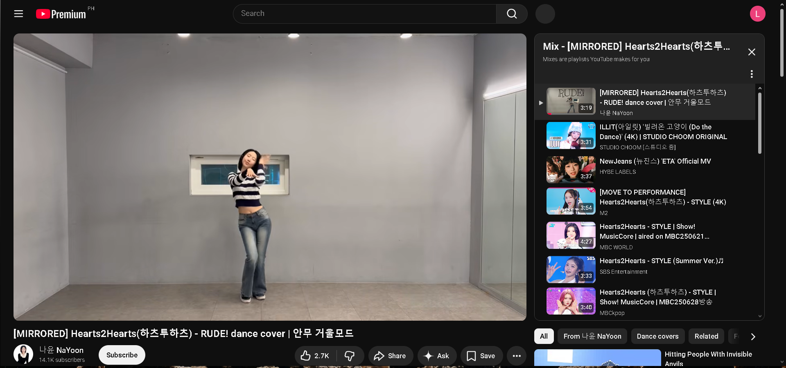
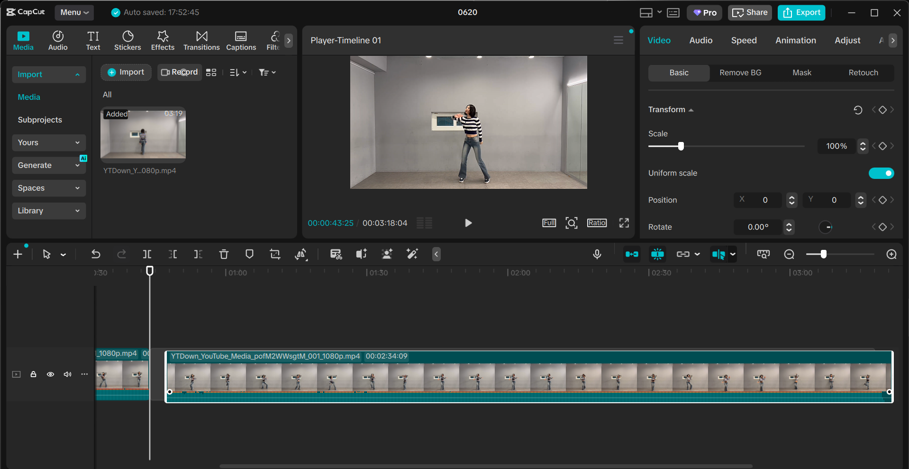
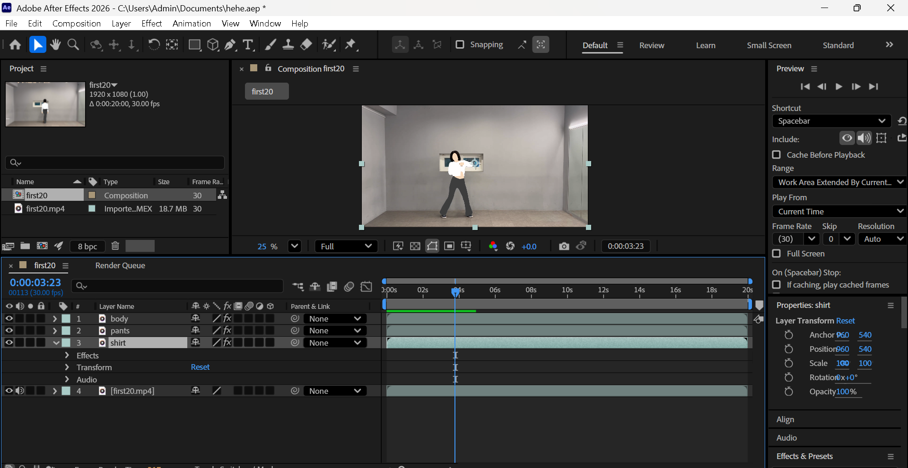
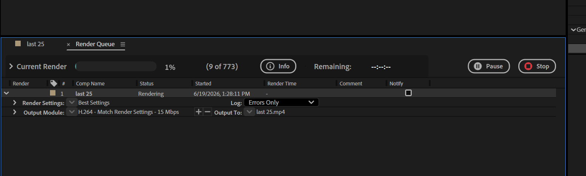
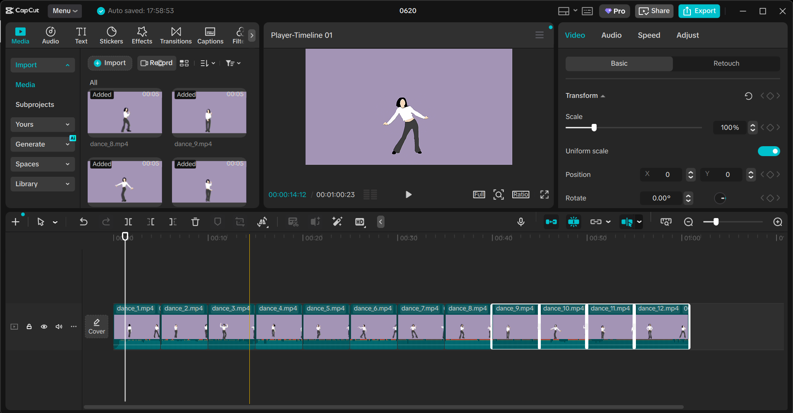
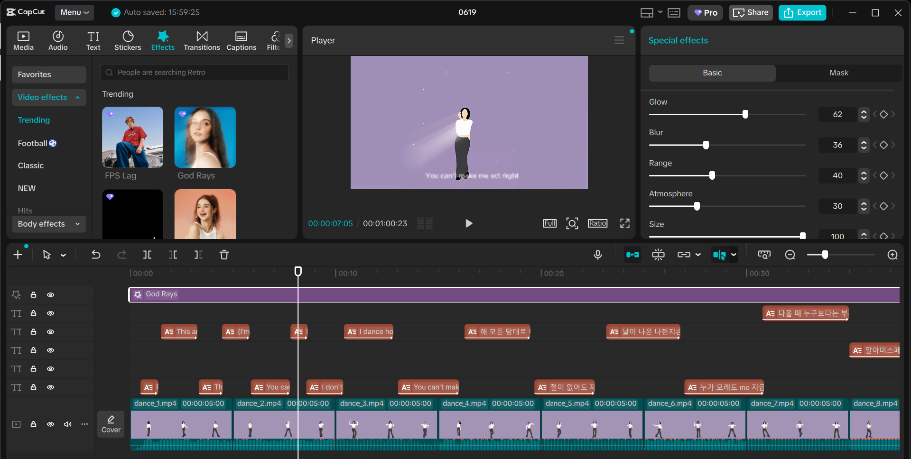

ROTOSCOPING
WORKFLOW
High-precision frame-by-frame masking and subject isolation. A technical breakdown of the animation process.
SOURCE MATERIAL
The original footage serves as the foundation for the rotoscoping process. Every frame is analyzed for motion paths and silhouette accuracy.
FINAL VIDEO
"RUDE!" — Hearts2Hearts (하츠투하츠)
DISCLAIMER: This rotoscoping project is intended for educational purposes only, showcasing technical animation and post-production skills. All rights and credits belong to the original owner(s).
STEP-BY-STEP

FIND REFERENCE VIDEO
Source and select the original footage that will serve as the foundation for your rotoscoping project.

EDIT IN CAPCUT (5s CLIPS)
Trim and cut your reference video into manageable 5-second clips for easier rotoscoping.

ROTOSCOPE IN AFTER EFFECTS
Use Adobe After Effects and the Roto Brush tool to create frame-by-frame masks and isolate your subject.

RENDER EACH CLIP
Export each rotoscoped clip from After Effects in your desired resolution and format.

COMBINE ALL CLIPS
Import all rendered clips and assemble them in sequence to form your complete rotoscoped animation.

FINAL EDIT IN CAPCUT
Polish your final video in CapCut with transitions, effects, and any additional edits for the final output.
PRODUCTION LOG
WEEK 01
WEEK 02
WEEK 03
WEEK 04
WEEK 05
WEEK 06
WEEK 07
WEEK 08
WEEK 09
WEEK 10
WEEK 11
WEEK 12
RAW VERSION
WHOLE VIDEO
AFTER EFFECTS
Primary engine for masking, interpolation, and advanced subject isolation using the Roto Brush and Pen toolsets.
CAPCUT
Optimized for final assembly, mobile-ready formatting, and seamless social media delivery.